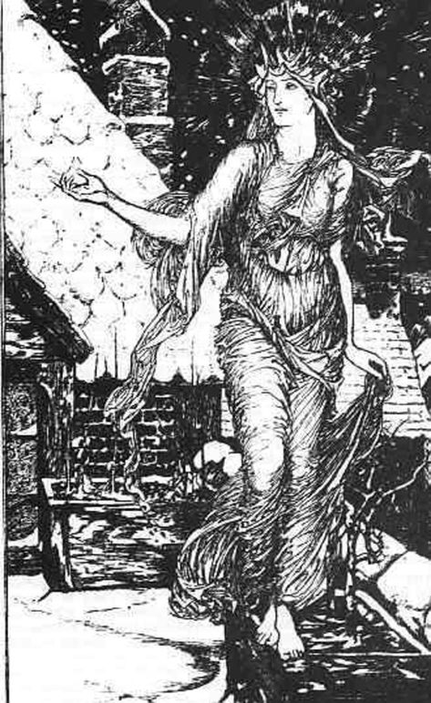
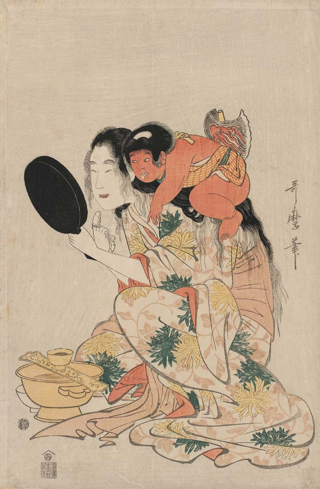

Баба-Яга - проводник в мир мёртвых?
Все пути волшебной сказки ведут в Тридевятое царство – мир мёртвых. Отправляется туда Иван-дурак, чтобы стать царевичем и жениться на Елене Прекрасной. Отправляется и Марьюшка в надежде отыскать ненаглядного Финиста Ясна Сокола. Немало испытаний ожидает героев в волшебной стране, ведь они достигли брачного возраста и должны доказать своё право на создание семьи.
Первая проверка их ожидает в избушке на курьих ножках, прообразом которой и является «хата-зверь», где в древности проводилась инициация.
Стоит избушка на курьих ножках без окон и дверей к лесу передом, а к Ивану – задом. Многие удивляются: зачем герой просит её повернуться к нему, почему он не может обойти избушку и проникнуть внутрь с другой стороны? А ведь действительно не может! Потому что жилище Яги – это дверь в иной мир, и слова «Избушка, избушка! Повернись ко мне передом, а к лесу – задом!» – не простые слова, а заклинание наподобие «сим-сим, откройся». Произнося их, Иван даёт знать, что он посвящаемый, а не случайный прохожий: он пришёл соприкоснуться с миром предков и получить тайные знания своего рода.
На пороге избы встречает путника Яга-баба. Колдунья вместила в себя образы первопредк а и распорядителя древнего обряда. Она караулит вход в Тридевятое царство и, по сути, является «живым трупом». Будучи хранительницей входа в Тридевятое царство, одной ногой Яга стоит в мире живых, а другой – в мире мёртвых. Вот поэтому одна нога старухи костяная, то есть без кожи.
Изба смерти, или Почему избушка Яги – это гроб?
Старуха лежит в избе, и её «нос в потолок врос», «впереди голова, в одном углу нога, в другом другая». Неужели избушка такая крохотная? Или Яга – это великан, раз занимает соб всё пространство? Не первое и не второе. Дело в том, что лежит колдунья не в хате, а в гробу. Волосы её лохматые, так как умершим косы в древности не заплетали. Только живые люди могли иметь собранные причёски. Мертвецы и всякая нечисть ходили с распущенными или спутанными космами. Вспомните русалок или кикимор – все они безобразно лохматы!
Оказывается, среди многочисленных способов захоронения славяне использовали погребение в домовине. Этот способ встречается в похоронных обрядах наших предков уже в I тыс. н. э. Домовины – это домики для мёртвых, с точностью повторяющие модель домов живых. Древние верили, что после смерти человека ожидает настоящая, вечная жизнь. «Здесь мы в гостях гостим, а там житьё вечное бесконечно будет», – рассуждали славяне. Дом на земле считался временным пристанищем души, а домовина-гроб – вечным жильём. Недаром в народе об умирающем говорили, что «он «домой собрался» или «собирается до своей хаты».
Откуда у избушки курьи ножки?
Если избушка Яги – это гроб, то почему к нему приделаны курьи лапки? Для потехи? Оказывается, гроб, который мы привыкли традиционно себе представлять, – позднейшее явление. Первые ящики для погребения усопших не были похожи на наши современные. Их делали в виде животных. Например, на островах Тихого океана учёные находили гробы с изображением акул, внутри них хранились тела вождей. В египетской «Книге мёртвых» есть изображения саркофагов, которые имеют ножки, голову и хвост животного. Древние охотники верили в то, что, умирая, человек превращается в зверя или птицу, или те съедают его; поэтому и гробы делали соответствующие.
В дальнейшем вера в тотем исчезает и гроб теряет зооморфные черты. А вот сказки сохранили память об этом. У индейцев волшебные хижины имеют изображения змей и волков, у народов Океании – акульей пасти. Волки, змеи, акулы – это тотемы, их почитали. Таковой была и курочка у славян. Её считали солнечной птицей, несущей золотые яички-солнышки, и напрямую связывали с небесным миром предков. Выходит, «птичьи ноги есть не что иное, как остаток зооморфных столбов, на которых некогда стояли подобного рода сооружения», – утверждает Пропп».
Интересно, что в некоторых русских народных сказках у избушки могут быть ножки и козьи, или вообще она может стоять на бараньих рожках, как, например, в сказке «Иван Быкович»: «В том лесу стоит избушка на курячьих ножках, на бараньих рожках, когда надо – повёртывается». Кто знает, какие варианты народных сказок с причудливыми постройками до нас так и не дошли!..
Альтернативную точку зрения на происхождение слова «курьи» высказала российский мифолог и фольклорист Александра Баркова. В статье «Верования древних славян» исследователь предполагает, что «курьи ножки» вовсе не куриные, а «курные». Столбы, на которых славяне ставили избу смерти, окуривали дымом, чтобы отпугнуть от них насекомых и животных и сохранить сруб с прахом покойника внутри как можно дольше.
Откуда у Яги такое странное имя?
Яга – персонифицированный кошмар
К такому выводу приходит Ю. С. Степанов, говоря, что слово «яга» связано с индоевропейским корнем *anh, который означает «узкий, тесный». Лингвист проводит сравнение между похожими словами из разных языков и отмечает, что в литовском есть глагол éngti – «душить, давить, мучить». Такой же глагол предполагается и в праславянском языке. Из чего следует, что слово «яга», возможно, происходит от этого глагола, а сам образ старухи представляет собой персонифицированный кошмар и в целом олицетворение «злой силы».
Яга – целительница, стерегущая врата в царство вечности
Оказывается, имя русской Яги близко к именам божеств из индуистских древнегреческих и древнеримских мифов. Такой языковой анализ провёл лингвист Ю. С. Степанов и показал, что портрет Яги более глубокий, чем нам кажется. Вырисовывается «добрая» сущность персонажа, занимающаяся целительством, и сущность, отвечающая за связь живых детей с умершими родителями. О том, что Яга в сказках сторожит вход в Тридевятое царство, мы говорили выше. О целительских способностях старухи поведём речь дальше. А сейчас давайте познакомимся ещё с одной версией происхождения имени нашей бабушки.
Яга – змея
В некоторых сказках Бабу-ягу зовут Яга Змиевна. Как я упоминала ранее, в праславянском языке слово *ęgа означает различных «гадов»: змей, ящериц.
Так, в украинском языке язi-ба́ба – это «ведьма, волосатая гусеница», а в древне-чешском словом jeze называют «ламию» – страшного летающего змея. Учёные сближают имя нашей колдуньи также с литовским angis – «змея, гадюка» и со славянским *ǫžь – «уж».
Может быть, поэтому в сказках как-то неясно объясняется, где у Яги вторая нога? Одна – «костяная», а другая? Неисключено, что ведьма прячет в ступе змеиный хвост! Некоторые ученые вообще считают: мол, первоначально у ведьмы не было ног, как у змеи. Иногда в сказках Баба-яга является матерью чудовищного Змея, с которым сражается герой. Подобно змее, она сосёт белые груди красавиц и охраняет источники с мёртвой и живой водой; спасается бегством под камень, в подземелье, проваливается в нору. Змеи издревле считались обитателями страны мёртвых. В одной русской народной сказке в Тридевятом государстве «нет ни души человеческой, ни птиц, ни зверей, только одни змеи кишат. То было царство змеиное»![90] Кто знает, возможно, Баба-яга – это ведьма-змея… Однако давайте рассмотрим ещё одну версию о происхождении имени колдуньи.
Яга – лесная баба
Итак, одни учёные говорят, что Яга – это персонифицированный кошмар; другие называют её хранительницей зверей и входа в царство мёртвых; а третьи считают, что Бабка-ёжка – это просто лесная колдунья. В чешском языке есть слово jezinka – «лесная ведьма», а на языке коми слово «яг» означает «бор, сосновый лес». У коми даже есть такой персонаж Яг морт – «лесной человек». Если имя нашей бабуси действительно связано с этими словами, то, не мудрствуя лукаво, её персонажа можно определить как «женщину из бора-леса».
Импортные Бабки-ёжки
Баба Рога

В Сербии, Черногории и Хорватии детей пугают Бабой Рогой – злой уродливой колдуньей с коровьим рогом посреди лба. Русская Яга рогов не носила, однако есть у нас загадка «стоит яга, во лбу рога» (печь с воронцами), которая напрямую отсылает к образу сербской ведьмы.
Как и сестра из России, живёт Баба Рога за горами в тёмных лесах – там, куда солнечный луч проникает только на Иванов день, когда Солнце останавливает свой ход из-за страха. Именно там колдунья и поджидает заплутавшихся детей.
Но Баба Рога не такая злая, как может казаться. Ночью она приходит к детишкам, укрывает их одеялом, если им холодно; вытирает со лба капли пота, когда им снятся кошмары… А если дети случайно проснутся, то она зыркнет на них зловещим взглядом и крикнет: «Бу»! Перепуганные детишки начинают плакать от страха, но Баба Рога считает, что пусть уж лучше они боятся её, но потом все тревоги и опасности этого мира будут им нипочём.
В одиночку, некрасивая и старая, несёт колдунья вечный крест своей скрытой добродетели. И когда дети вырастают, они скучают по Бабе Роге и жалеют, что она приходит только к маленьким. А кто усыпляет саму Бабу Рогу? Наверное, никто… никогда.
Фрау Перхта
В мифологии южных немцев, австрийцев и швейцарцев живёт ещё одна «Яга» – Фрау Перхта – суровая, безобразная и беспощадная ведьма! Если у нашей Яги одна нога костяная, то Перхта в старинных описаниях имела большую гусиную лапу.
В Голландии сохранилось предание, что колдунья летает на Йоль (более поздний вариант – на Рождество) в окружении злых духов и ищет что-нибудь съестное. Своим мечом она разрезает желудки людей, чтобы достать себе еду. Но если в это время хорошенько наедаться жирной пищей, то меч Перхты будет соскальзывать с желудка.
Первоначально Перхта считалась доброй богиней, тождественной Хольде: она являлась хранительницей зверей и была покровительницей женских дел, в первую очередь прядения(образ Хольды вам может быть знаком по сказке братьев Гримм «Госпожа Метелица», позже мы о ней по говорим). Однако впоследствии функции богинь разделились, и Перхте «достались» злая природа и устрашающая внешность. Именно этим можно объяснить, почему в некоторых описаниях Перхта появляется красивой и белой как снег, а в других – пожилой и измождённой.
Ямауба
Сестру Бабы-яги можно встретить даже в Японии. Это горная старуха Ямауба, чья кровожадность подтверждается её огромным ртом, от уха до уха, а по другим версиям, старуха имеет два обычных рта, которые расположены рядышком друг с другом.
Живет Ямауба в хижине, которая напоминает лесную избушку. Ведьма заманивает туда неосторожных путников, откармливает их и затем съедает. В других случаях Ямауба способна превращать свои волосы в ядовитых змей, жалящих жертву , что снова же сближает её с нашей Ягой, имеющей змеиную сущность.
В некоторых легендах повествуется о том, что Ямауба — существо ночное, днём же она обездвижена. Рассказывается также, что её единственным слабым местом является некий цветок, в котором находится её душа. Если этот цветок найти и уничтожить, то ведьма погибнет.
Ямауба не отличается большим умом, и иногда жертвам удаётся ведьму перехитрить. С другой стороны, умеет колдовать, знает целебные и привораживающие напитки, а также яды. Известны легенды, в которых ведьма делится своими тайными знаниями с человеком, выполняющим какое-нибудь злое деяние, например, приносящим ей жертву на съедение.